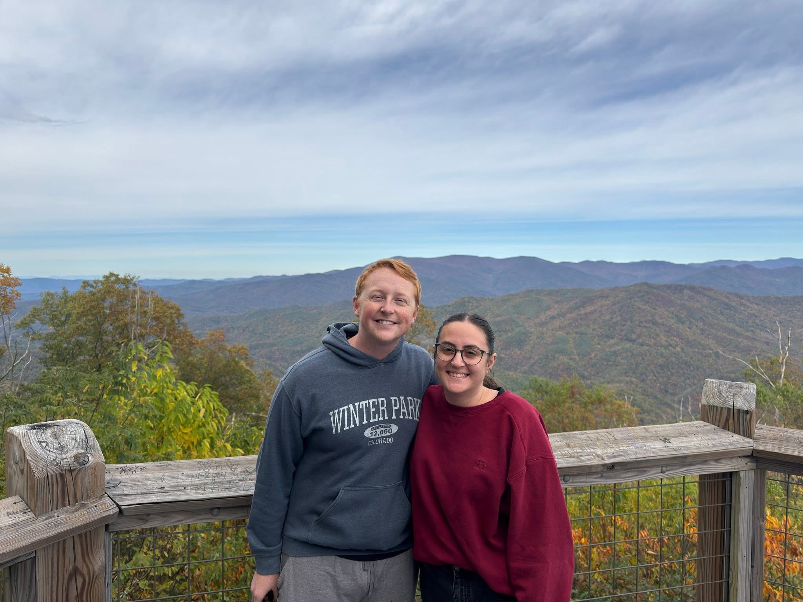

Mobile Notary Fort Wayne
A Fort Wayne mobile notary can travel to you for convenient notarization by appointment.
Mobile notary serviceFort Wayne's after-hours mobile notary public
Mobile notary public services available evenings, weekends, late nights, same day, and by appointment throughout Fort Wayne, Allen County, Leo-Cedarville, Auburn, and Northeast Indiana.
Mobile notary services
After Hours Mobile Notary of Fort Wayne travels to homes, workplaces, hospitals, nursing homes, retirement facilities, correctional facilities, and local businesses for document notarization in Fort Wayne and surrounding communities.
A Fort Wayne mobile notary can travel to you for convenient notarization by appointment.
Mobile notary serviceAfter-hours notary help is available by appointment for evenings and urgent scheduling needs.
After-hours notary serviceSame-day notary appointments may be available when documents, signer, and ID are ready.
Same-day notary serviceWeekend notary service can help when weekday business hours do not work for your schedule.
Weekend notary serviceLate night notary Fort Wayne availability may be available for time-sensitive needs.
Late-night notary service24-hour notary availability may be available by appointment or urgent request. Call or text to check availability.
24-hour availability detailsHospital notary Fort Wayne service for important healthcare, family, and personal documents.
Hospital notary serviceParkview notary and Parkview Regional Medical Center notary requests are welcomed by appointment.
Parkview notary serviceTraveling notary services for nursing homes, rehabilitation centers, and senior care facilities.
Nursing home notary serviceMobile notarization at retirement communities throughout Fort Wayne and Allen County.
Retirement facility serviceAssisted living notary appointments for powers of attorney, healthcare directives, and more.
Assisted living servicePrison notary Allen County and correctional facility notary appointments may be available.
Jail notary serviceOn-site notary public service for local businesses, offices, and professional teams.
Business notary servicePower of attorney notary and healthcare power of attorney notary appointments by request.
Power of attorney notarizationLiving will notary service for families, patients, and care planning needs.
Living will notarizationHealthcare directive notary appointments at homes, hospitals, and care facilities.
Healthcare directive serviceAffidavit notary help for sworn statements and document notarization Fort Wayne requests.
Affidavit notarizationMobile notarization for real estate documents when a local notary public is needed.
Real estate document serviceCall or text Shawn to request mobile notary service, describe the document type, and confirm the signer, location, identification, and timing.
Evening, late-night, weekend, same-day, and on call notary Fort Wayne requests are handled calmly and clearly whenever availability allows.
Shawn travels throughout Fort Wayne, Allen County, Leo-Cedarville, Auburn, and nearby Northeast Indiana communities.
Hospitals and senior care
Shawn can travel to hospitals, nursing homes, assisted living communities, retirement facilities, rehabilitation centers, and senior care facilities for important notarized documents.
Common requests include powers of attorney, healthcare directives, living wills, affidavits, and other documents that need a notary public Fort Wayne residents can reach quickly. Parkview Regional Medical Center is a major hospital campus in Fort Wayne, and Parkview notary or Parkview Regional Medical Center notary appointments may be available by request.
Correctional facilities
Mobile notary services may be available for Allen County jail notary, prison notary Fort Wayne, and correctional facility notary requests.
Correctional facility appointments are subject to facility rules, visitor requirements, scheduling, identification, and document readiness. Call or text Shawn before scheduling so the details can be reviewed and the facility process can be respected.
Service area
If you searched for notary near me, mobile notary near me, emergency notary Fort Wayne, traveling notary Fort Wayne, or local notary public, After Hours Mobile Notary of Fort Wayne can help you check availability.

About Shawn
Shawn is a Fort Wayne native who loves the community and is proud to provide reliable mobile notary public services to local residents, families, hospitals, nursing homes, retirement communities, correctional facilities, and businesses.
The goal is to make notarization simple, convenient, and accessible by traveling to the customer. Whether you need an after hours mobile notary, a same day notary Fort Wayne appointment, a weekend notary Fort Wayne visit, or help at a local facility, Shawn keeps the process calm and easy to contact.
Questions
Call or text 260-402-1674 when you need current availability for a Fort Wayne mobile notary appointment.
Yes. After-hours notary Fort Wayne appointments are available by appointment for evening, late-night, and urgent requests when scheduling allows.
Same-day notary Fort Wayne appointments may be available. Call or text 260-402-1674 with your location, document type, and timing.
Yes, weekend notary Fort Wayne service may be available by appointment for homes, care facilities, hospitals, offices, and other local locations.
24-hour notary availability may be available by appointment or urgent request. Call or text to check availability. Service is not guaranteed 24/7.
Parkview notary and Parkview Regional Medical Center notary appointments may be available by request, subject to scheduling, facility access, and document readiness.
Yes, hospital notary Fort Wayne service may be available for powers of attorney, healthcare directives, living wills, affidavits, and other documents.
Yes. Shawn can travel to nursing homes, assisted living communities, retirement facilities, rehabilitation centers, and senior care facilities.
Power of attorney notary appointments are available when the signer is present, willing, and able to provide appropriate identification.
Healthcare directive notary and living will notary appointments are common requests, especially for hospitals, nursing homes, and families planning care needs.
Allen County jail notary and correctional facility notary appointments may be available subject to facility rules, visitor requirements, scheduling, and document readiness.
Yes. Mobile notary Leo, notary Leo-Cedarville, mobile notary Auburn Indiana, and Auburn Indiana notary requests are within the broader service area.
Yes. Call or text Shawn at 260-402-1674 or email shawn@notaryfw.com.
Call or text Shawn to request mobile notary service in Fort Wayne, Allen County, Leo-Cedarville, Auburn, and surrounding Northeast Indiana communities.